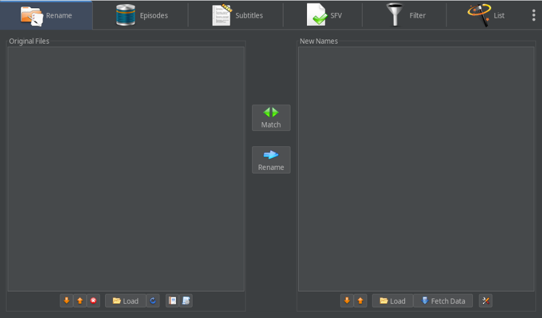
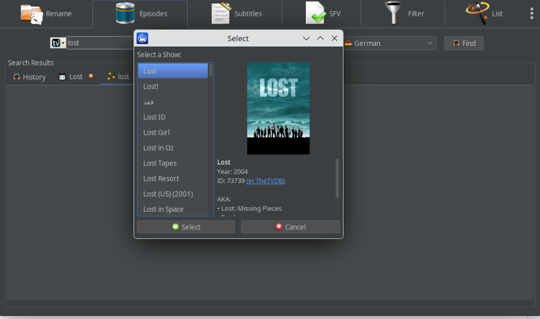

Organize your media,
the open-source way.
Batch-rename your movies, series episodes, and anime using online metadata. Match files to common naming schemes, move them into clean folder structures, and keep your media library perfectly organized.

Built By an Open-Source Fan, For You
I am a huge fan of open-source software and I enjoy sharing my work with the community. We've breathed new life into an old classic.
Modernized Tech Stack
We didn't just re-release the old code. We've completely overhauled aging technology inside the app. We integrated numerous modern libraries and, most crucially, upgraded the entire project to run on a new, modern Java version. This ensures better security, speed, and cross-platform compatibility moving forward.
Cross-Platform Support
Enjoy the same powerful features across your favorite operating systems. We provide pre-compiled installer packages and portable builds:
- Windows (x64 Installers & Portables)
- Debian / Ubuntu Linux (amd64, i386, armhf)
- Linux Portable Archives (x86_64, aarch64)

Preview before you rename
The interface provides comprehensive detail views and previews before applying any changes to your files.
- Easily verify matches and folder destinations.
- Dedicated tools for subtitles and file verification via SFV included.
- Redesigned UI currently undergoing a fresh revision to enhance user experience.
A Huge Thank You to the Original Author
OpenFileBot is an open-source software based on the final available GPLv3 source of FileBot. We are incredibly grateful to the original author and community for creating such an amazing tool over the years.
This unofficial version does not offer the same level of support or development backing as the commercial FileBot.
For premium features and professional support, we recommend purchasing FileBot.Frequently Asked Questions
Is OpenFileBot free?
Yes, it is 100% free and open-source under the GPLv3 license. I don't want donations. If somebody tells you you need to pay for OpenFileBot, it's a scam. Do not do it!
Where can I get help?
If you are fine with basic fixes and updates, you can open an issue on GitHub. Please attach all logs and screenshots. If I find some time, I will try to fix it. Keep in mind this is a community project. For dedicated, fast support, please buy FileBot.
Is the old technology still the same?
No, for this software we have modernized the backend tremendously. We’ve removed very outdated legacy code, adopted new libraries, and upgraded to a strictly modern Java version to keep the codebase maintainable and fast.
Is there an APT repository for Debian/Ubuntu?
Yes. OpenFileBot provides a signed APT repository at masterxq.github.io/openfilebot-repo/apt. Use the keyring from apt/keyrings/openfilebot-archive-keyring.gpg, then choose stable or testing. Full setup commands are in the README.